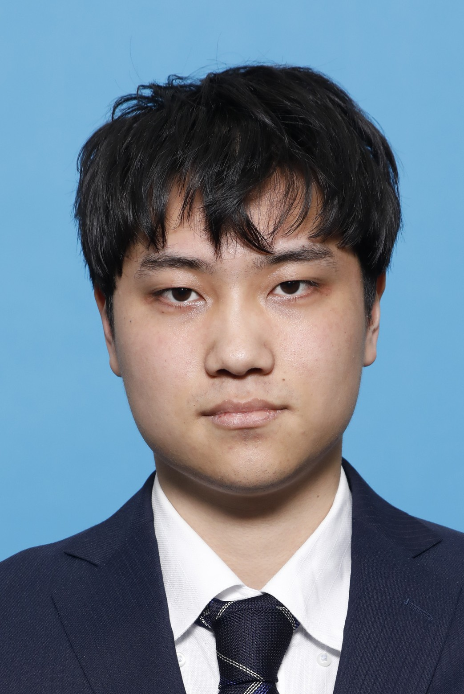
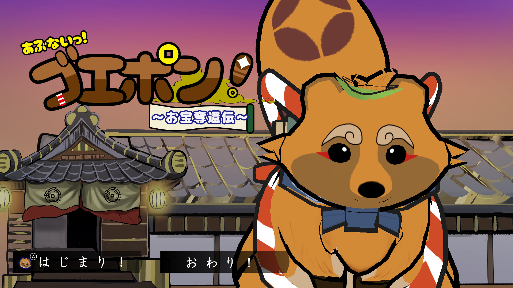
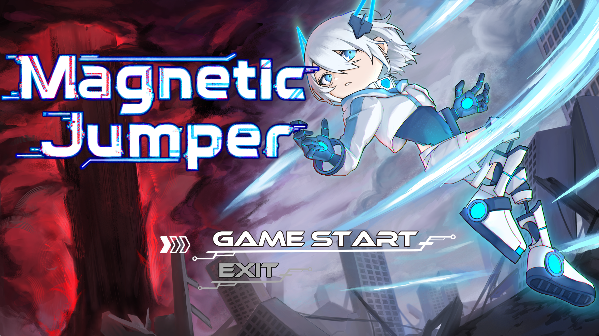

自己紹介
アミューズメントメディア総合学院ゲームクリエイター学科プログラマー専攻2年、
鈴木裕稀です。
プロフィール
基本情報
氏名 : 鈴木 裕稀(すずき ゆうき)
生年月日 : 2000年6月8日
在籍校 : アミューズメントメディア総合学院 ゲームクリエイター学科
東京都渋谷区東2-29-8/
TEL 03-3406-5090（教務室直通）
FAX 03-3406-5115

学歴
2016年 3月 川崎市立 住吉中学校 卒業
2016年 4月 私立 東京実業高等学校 機械科 入学
2019年 3月 私立 東京実業高等学校 機械科 卒業
2019年 4月 神奈川大学 工学部 総合工学プログラム 入学
2024年 3月 神奈川大学 工学部 機械工学科総合工学プログラム 卒業
2025年 4月 アミューズメントメディア総合学院 ゲームクリエイター学科 ゲームプログラマー専攻 入学
2027年 4月 アミューズメントメディア総合学院 ゲームクリエイター学科 ゲームプログラマー専攻 卒業見込み
職歴
2022年 4月 東京実業高等学校 バレーボールコーチ アルバイト入社
生徒の練習サポート、大会引率に従事
2024年 3月 東京実業高等学校 バレーボールコーチ 契約終了により退社
2025年 4月 東京実業高等学校 バレーボールコーチ アルバイト再入社
使用言語
C、C#、C++、Python、スクリプト言語(Lua)
開発環境
Visual Studio、Visual Studio Code、Unity、Unreal Engine 5、GitHub、Git、Fork、Gitコマンド
ゲーム製作作品

冬季制作
あぶないっ！ゴエポン！～お宝奪還伝～
ゲームジャンル
3D変化ステルスアクションゲーム
製作期間
約3ヵ月(2025/11/28～2026/3/23)
制作人数
11名(プランナー2名、プログラマー3名、デザイナー6名)
担当箇所
プレイヤー、開発支援ツール、アニメーション・エフェクト、サウンド、敵巡回、チェックポイント
開発環境
C/C++、Python、Visual Studio、DXライブラリ
詳細はこちら
夏季制作
Magnetic Jumper
ゲームジャンル
ハイスピード2Dアクション
製作期間
約3ヵ月(2025/7/22～2025/10/1)
制作人数
13名(プランナー2名、プログラマー2名、デザイナー9名)
担当箇所
画面遷移、ギミック、アニメーション管理、プレイヤー(メイン攻撃やダッシュなどのアクション以外)、演出
開発環境
C/C++、Visual Studio、DXライブラリ
詳細はこちら